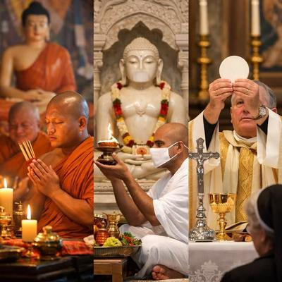

Desde una perspectiva occidental, el ateísmo suele entenderse como una ruptura: una negación, una rebeldía intelectual contra un «Dios» previamente asumido como real, central y normativo. Sin embargo, este marco conceptual se desmorona cuando se observa con atención la historia cultural y filosófica de gran parte de Asia. Allí el ateísmo —o algo muy cercano a él— no surge como reacción, sino como condición de origen.


En amplias regiones de Asia oriental y meridional —China, Japón, Corea, Vietnam, India— no tiene sentido cultural «creer en Dios», sencillamente porque no existe la idea dominante de un «Dios» creador personal, omnipotente y moralizador, como el que caracteriza a las religiones abrahámicas. Por tanto, esa frecuente pregunta occidental: «¿Crees en Dios?», resulta en muchos de esos contextos, tan extraña como irrelevante.
Y es que uno de los errores más persistentes del pensamiento occidental es identificar religión con fe, y fe con creencia obligatoria. Pero en gran parte de Asia, la religión no se organiza alrededor de credos, sino de prácticas, rituales y normas éticas. No se exige adhesión mental a una doctrina revelada, sino la participación en una tradición cultural.
Por eso millones de personas practican rituales budistas, confucianos o taoístas, sin sentir la necesidad de «creer» en nada sobrenatural en el sentido teísta. Porque nunca se les enseñó que creer fuera el centro de la vida espiritual… porque ese centro simplemente no existe en sus tradiciones.
Así, religiones y filosofías tan influyentes como el budismo y el jainismo, prescinden por completo de un «Dios» creador. El propio Buda rechazó la idea de un creador eterno, y consideró que especular sobre dioses distraía del problema real: el sufrimiento humano y sus causas. En el budismo los dioses —si existen— no salvan, no juzgan y no redimen. Son irrelevantes.
Pero el jainismo va aún más lejos: el universo es eterno, no creado, y la liberación depende exclusivamente del esfuerzo ético y ascético del individuo. No hay algo así como «gracia divina» ni «voluntad superior» que premie o castigue.
Incluso dentro del hinduismo, a menudo caricaturizado por un politeísmo exuberante, existen escuelas filosóficas abiertamente no teístas, como Samkhya o Mimamsa, que consideran innecesaria —e incluso incoherente— la hipótesis de un creador. Y estas tradiciones demostraron hace más de dos mil años que es posible explicar el mundo, el sufrimiento y la moralidad sin recurrir a dioses.
Por eso, a diferencia del cristianismo occidental, Asia no tuvo que «sacrificar a Dios»; porque nunca lo colocó en el centro del universo ni de la vida moral.
Por otra parte, a menudo se atribuye el alto nivel de secularidad en países como China o Vietnam, a la influencia del comunismo y el ateísmo estatal. Sin embargo, esta explicación es insuficiente, porque si bien es cierto los regímenes comunistas reforzaron la secularización, no la crearon. Se trata de sociedades que ya estaban culturalmente preparadas para vivir sin dioses personales mucho antes de Marx o Lenin. El confucianismo es una ética social sin teología; el taoísmo es una cosmología naturalista, y el budismo es una psicología del sufrimiento sin creador. Por tanto, el comunismo encontró un terreno fértil, precisamente porque no tuvo que desmontar la idea de un «Dios» central, tal como ocurrió en Europa.
Pero esto no significa que las culturas asiáticas sean estrictamente racionalistas o científicas. Históricamente han practicado rituales, honrado ancestros, creído en fuerzas impersonales, energías, destinos y equilibrios cósmicos. Por tanto, existe un pensamiento mágico, pero no un teísmo personal. Y aquí está la clave: si definimos ateísmo no como la negación explícita de todo lo sobrenatural, sino como la ausencia de creencia en un «Dios» creador, personal, omnipotente y moralizador, entonces una conclusión incómoda se vuelve inevitable: la mayor parte de la humanidad es atea.
Sí, China, India, Japón, Vietnam y otros países asiáticos, concentran una proporción enorme de la población mundial. Y si aceptamos una definición antropológicamente honesta de ateísmo —no creer en un «Dios» personal que crea el mundo, dicta la moral y juzga a los humanos—, entonces la mayoría de los seres humanos vivos hoy son, en ese sentido, ateos. Y esto desmonta una de las grandes ilusiones del pensamiento religioso occidental: la idea de que el teísmo es lo «normal» y el ateísmo es la excepción. Porque históricamente, culturalmente y demográficamente, no lo es.
Más bien todo esto nos obliga a invertir la pregunta habitual. En lugar de preguntarnos por qué Asia puede vivir «sin Dios», deberíamos preguntarnos: ¿Por qué en Occidente se volvió obligatorio creer en un «Dios» para ser considerado normal? Una pregunta que dice mucho más sobre la historia del cristianismo, que sobre la naturaleza humana.
[Godless Freeman]
Referencia:
https://theconversation.com/atheism-has-been-part-of-many-asian-traditions-for-millennia-113535
Comentarios
Comments powered by Disqus